今日趋势
在ChatGPT Wallet的初始版本里，选好商品还没有完成授权：总额与卡片要交回本人核对，再经过一次安全检查。以后按预算自动购买的设想，不能提前算成今天已经开放的能力。另一项更基础的约定来自llama.cpp：接口不兼容时用主版本号明示，让依赖它的程序知道何时值得另做迁移。
运行入口变多，也没有自动回答模型是否解决了正确的问题。Ai2当天的新解读把表面请求和真实目标拆开评测，同时交代生成题、自动评分与英语单轮场景的范围。公司公告则提供另一种检验：3亿美元融资、3.97万美元季度收入与287家潜在诊所网络，各自衡量不同阶段，不能互相换算成已实现的效果。
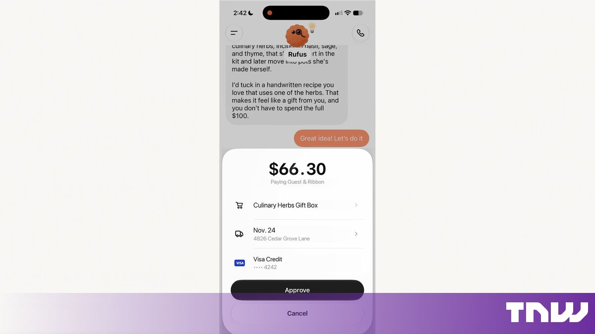
OpenAI
ChatGPT钱包上线逐笔确认付款
来源: OpenAI · 2026-11-14 · 原文链接
OpenAI与American Express、Mastercard、Visa推出ChatGPT Wallet，先向美国年满18岁、持合格美国发行卡的ChatGPT Pro用户，在dots中逐步开放。用户每次核对商品、总额和所选卡，再经Face ID、指纹等安全检查批准；支付网络随后提供替代真实卡信息的支付token，代理与商家都不接触实际卡详情。现有卡奖励及符合条件的争议保护继续适用。按预算、品类或时段预先授权自主购买属于后续计划；商家拦截和风控误拒仍可能影响成交。
Janet 锐评：
选购建议走到扣款，决定权有了一个明确的交接点：商品、总价和卡片一起摆出来，再由本人确认。支付token保护卡信息，却不会替人判断买得是否合适，也不会替商家解决退货；这些责任仍在原来的关系里。逐笔确认保留了一次重新考虑的机会，后续若开放预算内自动购买，授权记录能否说清楚买了什么，会比少点几次按钮更影响信任。
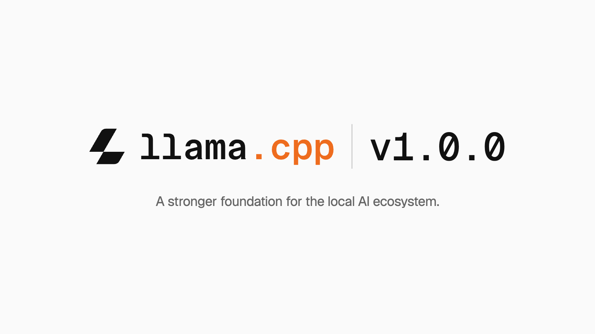
ggml-org / Hugging Face
llama.cpp用主版本号标明接口变更
来源: ggml-org / Hugging Face · 2026-11-14 · 原文链接
ggml-org发布llama.cpp与ggml库的1.0.0版本，明确后续将用主版本号变化提示API或ABI不兼容。其版本规则区分公开C接口破坏性变化、向后兼容的功能与后端或模型支持，以及不改API的修复。项目称目前支持超过150种模型架构变体，并继续扩展跨平台分发与测试基础设施。这是运行库的版本契约，不代表所有接口从此冻结，也不是一款新基础模型。
Janet 锐评：
依赖一个推理库的应用，往往比模型本身更怕一次悄悄改掉的接口。主版本号给维护者一个可识别的信号：哪些更新可以按原约定接着用，哪些值得单独安排迁移。承诺有变化就明说，比承诺永远不变更现实；它仍依赖发布记录、测试和下游实际兼容性一起兑现。
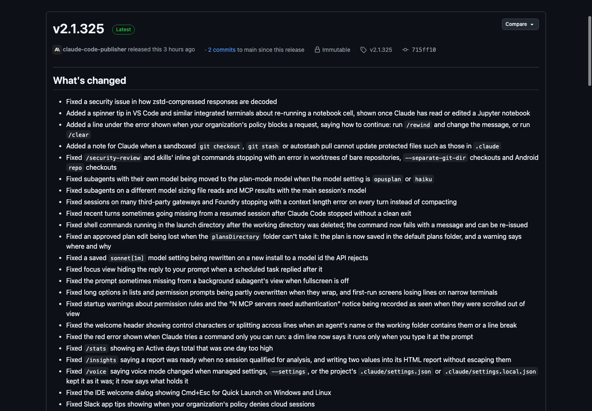
Anthropic / GitHub
ClaudeCode修正后台登录与计费选择
来源: Anthropic / GitHub · 2026-11-14 · 原文链接
Anthropic发布Claude Code 2.1.325，修复zstd压缩响应解码的安全问题，以及后台会话原本使用claude.ai登录、却改用启动服务时shell中的API密钥或token计费的情况。版本还修正异常退出后恢复会话丢失近期轮次、部分工作目录删除后命令退回启动目录，以及若干权限和沙箱检查问题。上述范围来自官方维护日志，不把补丁描述扩大成已经发生的攻击或损失。
Janet 锐评：
同一台电脑上存在两套登录，后台任务就可能碰到一张出乎意料的账单。身份、计费来源和恢复后的上下文都得延续原来的约定；修掉这些细节，远比让状态栏看起来一直在线更贴近日常使用。
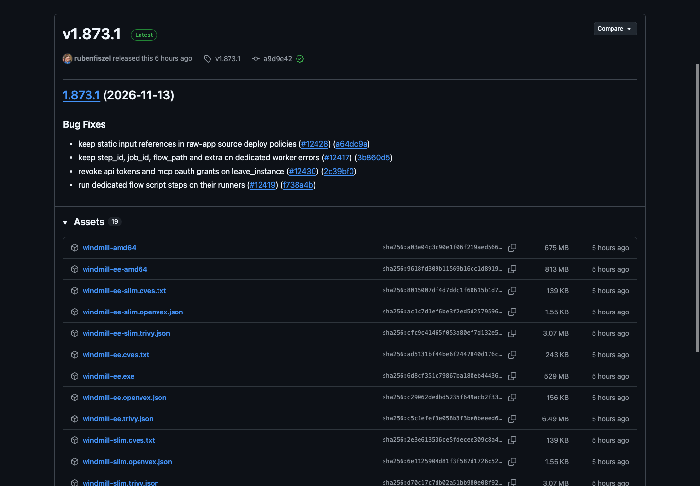
Windmill / GitHub
Windmill停止退出实例后的旧令牌授权
来源: Windmill / GitHub · 2026-11-14 · 原文链接
Windmill 1.873.1修复用户离开实例后API令牌及MCP OAuth授权的撤销处理。版本同时保留专用执行节点错误中的步骤ID、任务ID、流程路径等定位信息，并修复专用流程脚本的执行节点选择与raw-app部署策略中的静态输入引用。这是一组权限回收与运行定位补丁，适用对象是Windmill实例中的相关授权和任务。
Janet 锐评：
账号关系已经结束，旧令牌却还能继续代表一个人做事，会留下很难察觉的尾巴。授权回收跟上离开实例这个动作，错误记录又能指出具体任务，两处修正都落在实际操作的边界上。
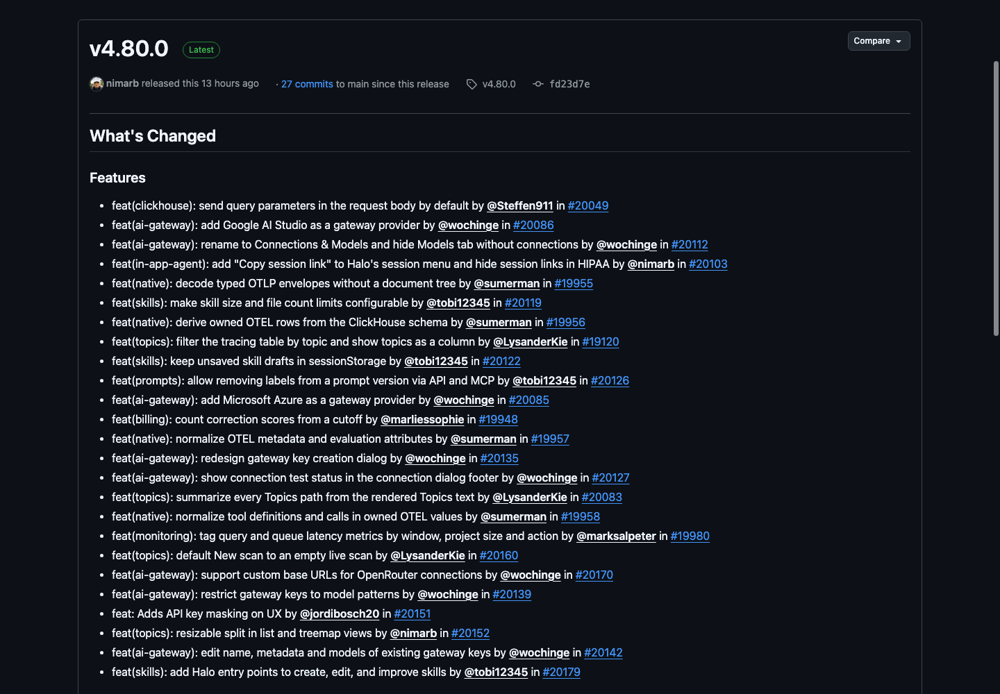
Langfuse / GitHub
Langfuse接入两类网关并限制模型密钥
来源: Langfuse / GitHub · 2026-11-14 · 原文链接
Langfuse 4.80.0为AI网关增加Google AI Studio与Microsoft Azure连接，支持按模型名称模式限制网关密钥，并可编辑既有密钥的名称、元数据和模型范围。连接界面新增测试状态反馈，界面中的API密钥增加遮蔽显示；另有会话绑定与观测数据处理修复。新增连接入口与界面遮蔽各有作用，实际可调用范围仍由密钥和服务端规则决定。
Janet 锐评：
一个能调所有模型的入口，未必适合发给所有项目。把模型范围写进每把网关密钥，能减少误接和意外花费；界面遮住密钥则解决旁观与复制场景，两件事各守一段边界。
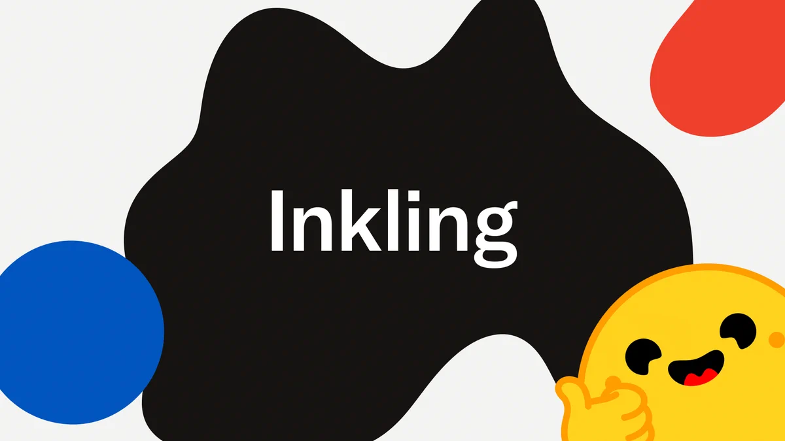
Hugging Face Transformers / GitHub
Transformers新增Inkling2运行支持
来源: Hugging Face Transformers / GitHub · 2026-11-14 · 原文链接
Transformers 5.23.0加入Inkling 2 Small等模型架构支持。官方版本说明介绍，Inkling 2接收图像与文本并输出文本，语言部分有48层混合专家结构，总参数5940亿、每次激活170亿。这次新增的是框架适配，底层模型并非当天首发。该版还引入实验性的JEV决策模型与decision流水线；维护者明确提示，其API、配置及行为仍可能变化。
Janet 锐评：
模型权重已经公开，与常用框架能顺利加载，中间隔着一段适配工作。5940亿总参数和170亿激活参数也回答不同的问题：少算一些，并不会自动少存同样多的权重。
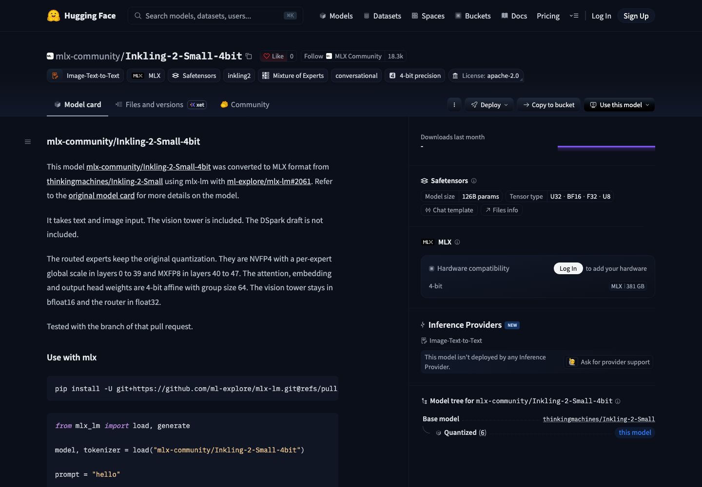
mlx-community（独立转换）
社区转换Inkling2保留混合精度专家
来源: mlx-community（独立转换） · 2026-11-14 · 原文链接
同一模型的另一项新增入口是mlx-community当天创建的Inkling-2-Small-4bit独立MLX转换版。它包含视觉塔，不包含DSpark草稿模型；普通部分权重使用四位量化，专家仍保留原有NVFP4与MXFP8混合格式，视觉塔与路由器另用较高精度。作者只报告在mlx-lm第2061号PR分支上测试，不能据此认定任意稳定版运行器都已兼容。
Janet 锐评：
名字里的4bit没有覆盖每一块权重，草稿模型也没有一并装进来。下载前看清实际组成和测试分支，能少一些把文件格式、硬件容量与运行兼容性混作一件事的误会。
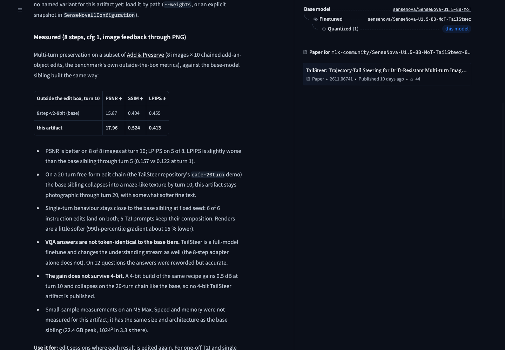
mlx-community（独立转换，作者自报）
SenseNova连续编辑模型加入八位转换
来源: mlx-community（独立转换，作者自报） · 2026-11-14 · 原文链接
社区发布SenseNova-U1.5-8B-MoT-TailSteer的八步V2、八位MLX转换版：将官方八步蒸馏LoRA并入TailSteer检查点，再作group-64量化，供Apple Silicon上的专用MLX-Swift运行器加载。它是独立转换与组合，原作者未记录这一搭配。转换作者在8张图、各10轮连续编辑的小样本中报告保留能力改善，同时提示细文字稍软、四位版本未保留增益；本转换版尚未单独测量速度和显存，不能沿用兄弟版本数据作保证。
Janet 锐评：
创作者改完衣服颜色，再加一件物品，最不想看到的是前面已经确认的画面跟着漂走。连续编辑的保留能力，比单张样片漂亮更贴近这种返工。八张图的测试给了试用线索，也留下了明显范围；细字变软和四位版本效果退化，说明节省空间并非免费。这份转换值得作为具体工具实验，稳定性仍由自己的素材链来检验。
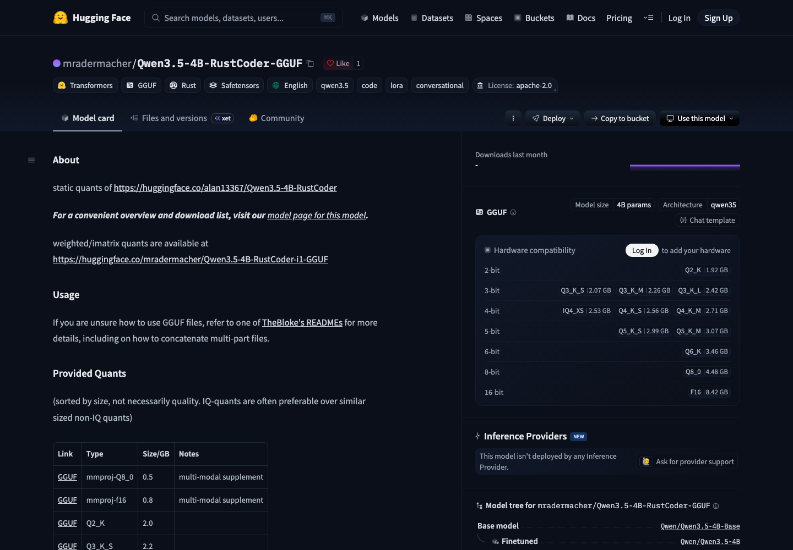
mradermacher（独立量化转换）
RustCoder独立微调新增GGUF转换版
来源: mradermacher（独立量化转换） · 2026-11-14 · 原文链接
mradermacher在窗口内首次创建Qwen3.5-4B-RustCoder-GGUF，转换自alan13367的独立Rust代码微调，基础模型和微调并非因此变成Qwen官方新发布。模型卡列出多种量化文件，其中Q4_K_M约2.8GB；多模态投影文件另列。文件体积不等于完整运行内存，转换页也未提供新的独立Rust编程能力评测。
Janet 锐评：
小文件降低了本地试跑的门槛，Rust代码是否可靠仍由编译、测试和任务本身回答。一份量化下载清单能说明怎么装，不能替专门的代码评测先宣布能力提升。
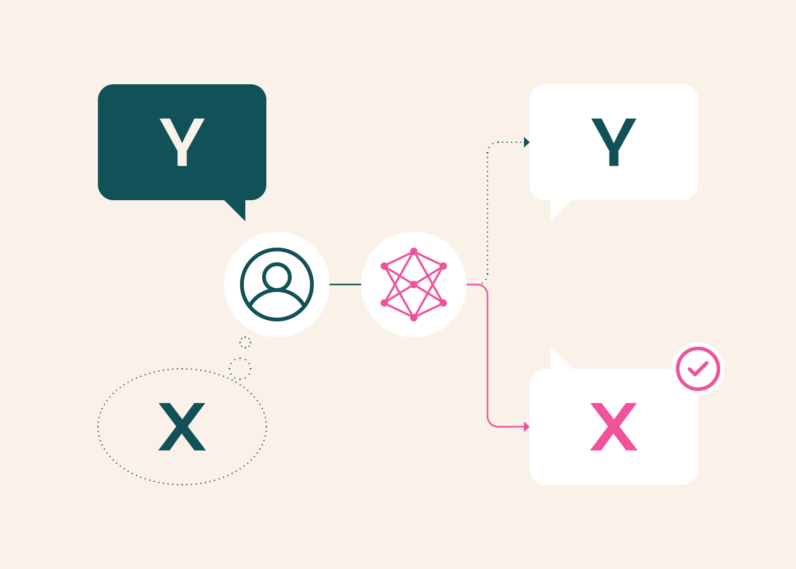
Allen Institute for AI / Hugging Face
Ai2发布新解读检验问题前提
来源: Allen Institute for AI / Hugging Face · 2026-11-14 · 原文链接
Ai2在当天发布XYBench的新研究解读，基础成果已获EMNLP 2026资源论文奖。8115个问题包含论坛题、人工案例及6272个基于WikiHow生成的问题，不能全算真人原始提问。评测区分回答表面请求、处理真实目标和指出误解：在Stack Overflow部分，受测模型主要围绕真实目标作答的比例仅35%—41%。研究使用Sonnet 4.5自动评分并抽取500份回答做人类核对，当前主要覆盖英语、程序性问题和单轮互动。
Janet 锐评：
用户问的是一种办法，想解决的却可能是另一件事。看见蛋糕上的糖霜往下滑，继续推荐增稠技巧，可能会错过蛋糕还没凉这个原因。XYBench把“提到正确办法”与“围绕它组织回答”分开，提醒我们别只在长答案里找一句碰巧正确的话。生成题和自动评分的比例也交代清楚，判断才能停在这份证据实际覆盖的位置。
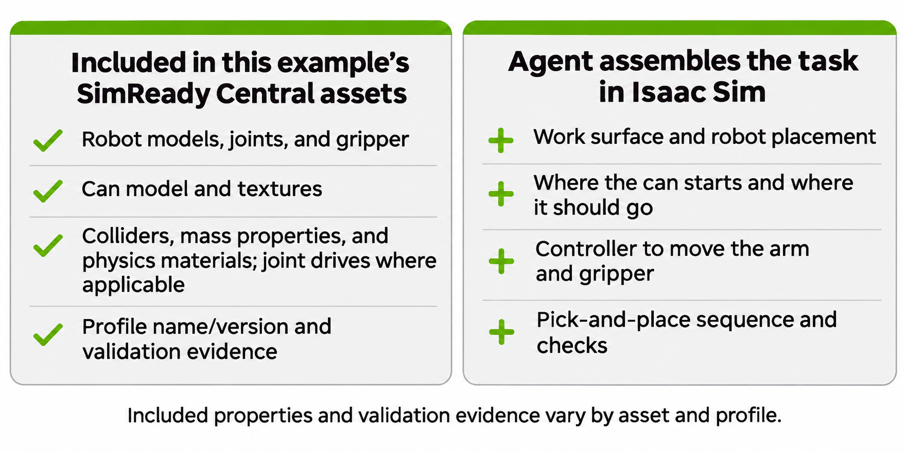
NVIDIA / Hugging Face
NVIDIA用抓罐演示说明仿真验证范围
来源: NVIDIA / Hugging Face · 2026-11-14 · 原文链接
NVIDIA当天发布SimReady资产的新操作教程，使用已有UR17G机械臂、Robotiq 2F-140夹爪和饮料罐，在Isaac Sim 6.2中搭建抓取与放置任务。资产提供质量、碰撞、关节及驱动设置，场景装配和控制代码仍需另外完成。示例使用已知罐位置、固定路径和简化物理，没有视觉输入或液体变形模拟；通过资产配置检查，不等于已经证明真实硬件或未知场景下的抓取可靠性。
Janet 锐评：
画面里的机械臂能动，与罐子真的能被夹稳，是不同的检查。把没有视觉、位置已知和罐体不变形写出来，反而让演示更有用：后来的人知道自己复现了什么，也知道还没测到什么。
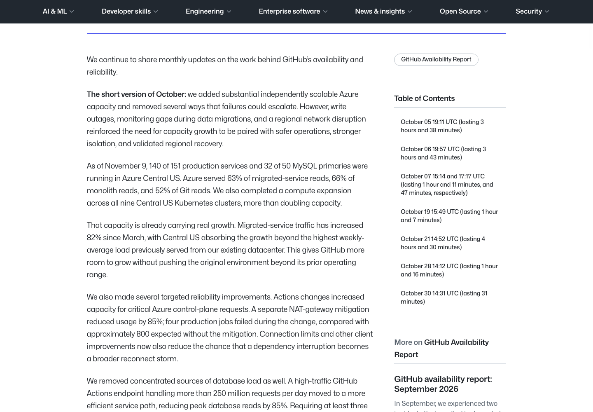
GitHub Blog
GitHub发布月报复盘十月八起故障
来源: GitHub Blog · 2026-11-14 · 原文链接
GitHub在本窗口内首次公开十月可用性报告，复盘8起影响服务表现的事件，基础故障发生于10月。报告称其Central US九个Kubernetes集群算力已扩展至原来两倍以上，但部分网络故障曾使等待调用累积、服务重启，转移流量又压向容量不足的区域。公司同时披露数据库查询减负和隔离措施，以及仍需验证的异地恢复安排；扩容进度与可用性表现没有被写成同一项成绩。
Janet 锐评：
多备一些算力，能接住增长，却不一定接得住所有失败方式。超时调用堆积、恢复流量挤向别处，是这份复盘给出的具体教训；每月公布这些失误，也给依赖平台的人留下判断依据。
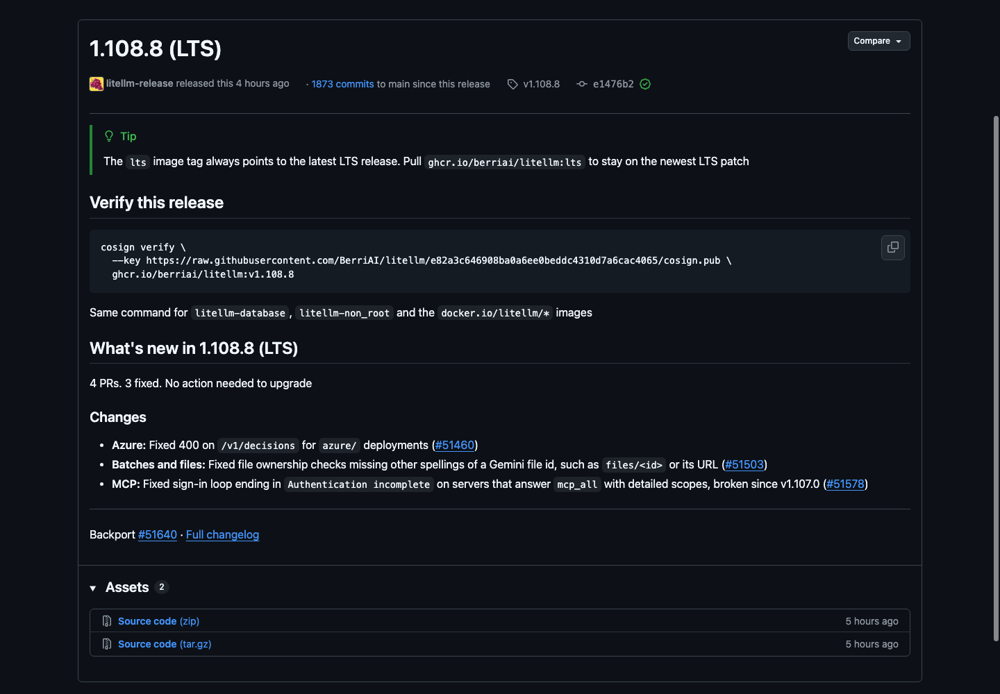
LiteLLM / GitHub
LiteLLM补上Gemini文件别名归属检查
来源: LiteLLM / GitHub · 2026-11-14 · 原文链接
LiteLLM 1.108.8长期支持补丁修正Gemini文件ID存在不同写法时遗漏的文件归属检查，例如files路径形式或完整URL；同时修复Azure部署调用决策接口返回400，以及部分MCP服务器详细scope导致登录循环的问题。修复针对资源标识与登录处理的明确路径，不能从一条维护记录推断所有网关权限问题已经解决。
Janet 锐评：
同一份文件可以有几种名字，权限检查却得认出它们指向同一个对象。路径和URL之间漏掉的一步，可能比模型回答得好不好更靠近资料真正的出入口。
投资与商业
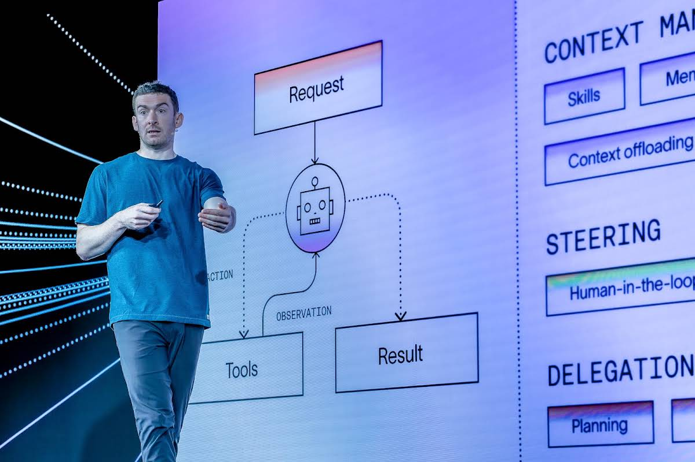
LangChain / Business Wire
LangChain新公告披露三亿美元融资
来源: LangChain / Business Wire · 2026-11-14 · 原文链接
LangChain在窗口内发布公司公告及投资方说明，披露3亿美元Series C、30亿美元估值，累计融资4.6亿美元；融资此前已有媒体报道，本条记录当天正式披露的细节。CapitalG领投，GIC、DFJ Growth等参与。公司称超过7000家组织使用LangSmith，并将运行、持续改进和管理代理列为平台三类能力；客户计数为公司自报，11月20日的新能力发布活动仍是后续安排。
Janet 锐评：
资金在押注模型周围长期存在的工作：测试、运行、查错和持续改进。七千家组织说明有人使用这套工具，仍没有说明每家付多少钱或每次任务能省多少成本；融资、估值与经营结果各有自己的分母。
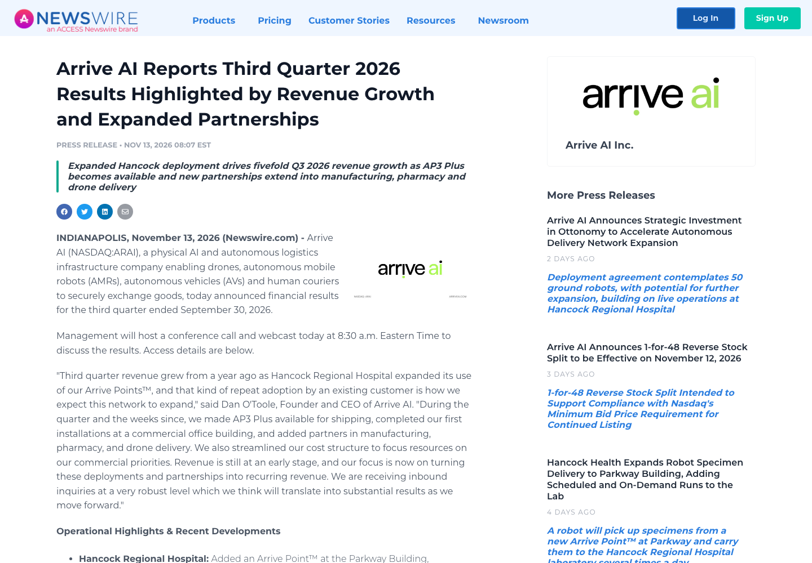
Arrive AI / Newswire
ArriveAI季度收入涨至3.97万美元
来源: Arrive AI / Newswire · 2026-11-14 · 原文链接
Arrive AI发布截至9月30日的第三季度业绩：收入3.97万美元，上年同期7450美元，约为原来的5.3倍，主要来自Hancock医院扩大部署；运营开支330万美元，净亏损370万美元。期末现金及现金等价物110万美元，另有公允价值投资100万美元。公司继续拓展智能物流交接点，部分药房与无人机合作仍属探索、没有收入承诺；现有部署、合作意向与经常性收入需分别看待。
Janet 锐评：
五倍增长很醒目，3.97万美元的绝对收入同样不能省掉。医院愿意扩大使用，是比签一张意向书更实在的进展；但对照330万美元季度运营开支，商业化仍处在很早的阶段。现金与公允价值投资分开列，也帮助读者看清资产怎样构成，避免把所有合作和所有账面金额一起当成已经兑现的订单。
SBC Medical / Business Wire
SBC参股台北NBD共建六项医疗AI
来源: SBC Medical / Business Wire · 2026-11-14 · 原文链接
SBC Medical宣布11月13日与台北NeuroBrain Dynamics签订资本及业务合作，对NBD作少数股权投资，金额和持股比例未披露。双方拟开发六项医疗运营AI，包括导览、预约推荐、病历草稿、排班、宣传与安全监测；临床决定仍归医生。287家是截至7月底的诊所网络规模，并非已部署数量。骨科病历验证计划于2026年底完成，部分工具拟从2027年中推广，仍属于待验证和可能调整的计划。
Janet 锐评：
提升诊所收入、减少文书负担和改善就诊体验，可能相互支持，也可能各有取舍。六项工具有了验证与推广时间表，仍得逐个交出结果；尤其当推荐同时承担提高客单价的目标时，患者得到什么不能只用营收来代答。